四组视角分区与选择性聚合
真实XYZ；黑色CAD；照片/未验证跨视频关系仅候选；背景DISPLAY_ONLY，无GT。报告 · 全部结果
figures/P0_code_reuse/G01.png

figures/P0_code_reuse/G06.png

figures/P0_code_reuse/G07_G08.png

figures/P1_cleaning/G01.png

figures/P1_cleaning/G06.png

figures/P1_cleaning/G07_G08.png

figures/P2_view_distribution/G01.png

figures/P2_view_distribution/G01_five_sources.png

figures/P2_view_distribution/G06.png

figures/P2_view_distribution/G07_G08.png

figures/P3_view_partition/G01.png

figures/P3_view_partition/G06.png

figures/P3_view_partition/G07_G08.png

figures/P4_mast3r_matching/G01.png
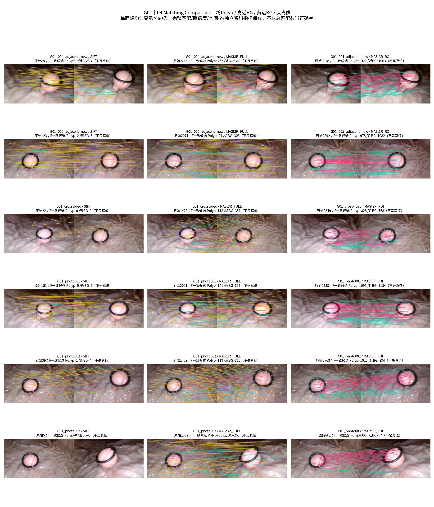
figures/P4_mast3r_matching/G06.png
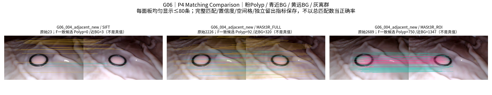
figures/P4_mast3r_matching/G07_G08.png
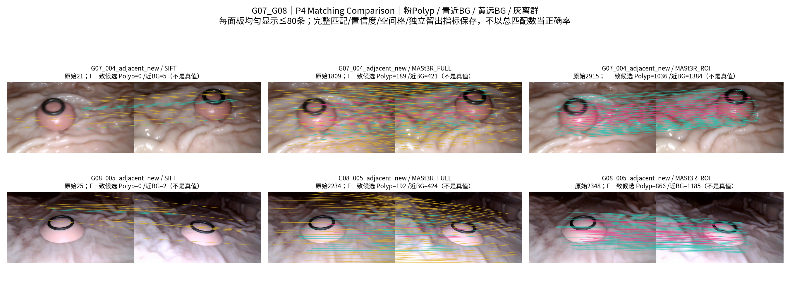
figures/P5_adjacent_registration/G01.png
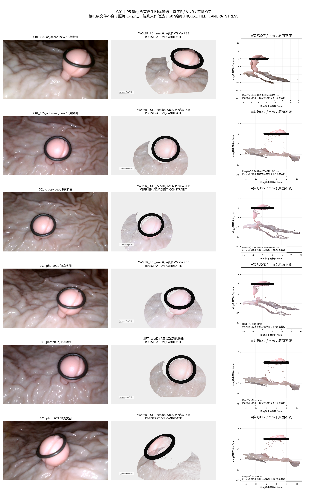
figures/P5_adjacent_registration/G06.png
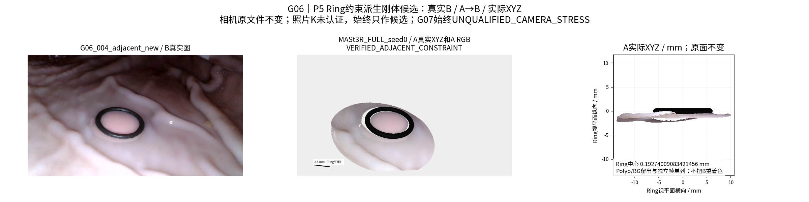
figures/P5_adjacent_registration/G07_G08.png
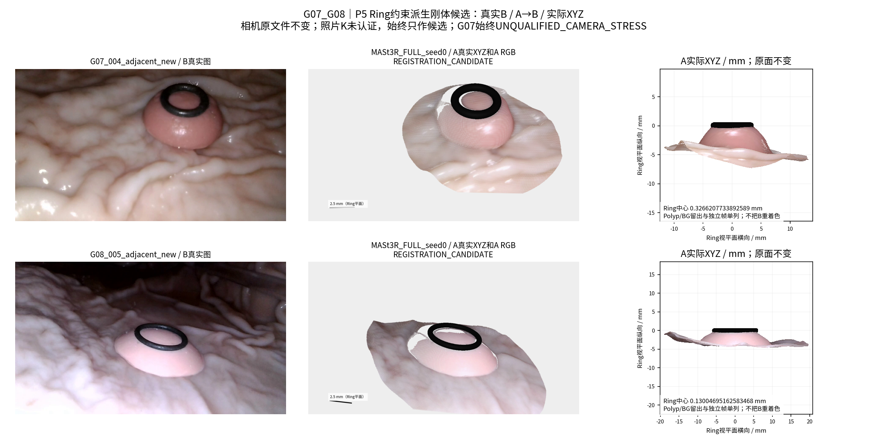
figures/P6_global_pose/G01.png
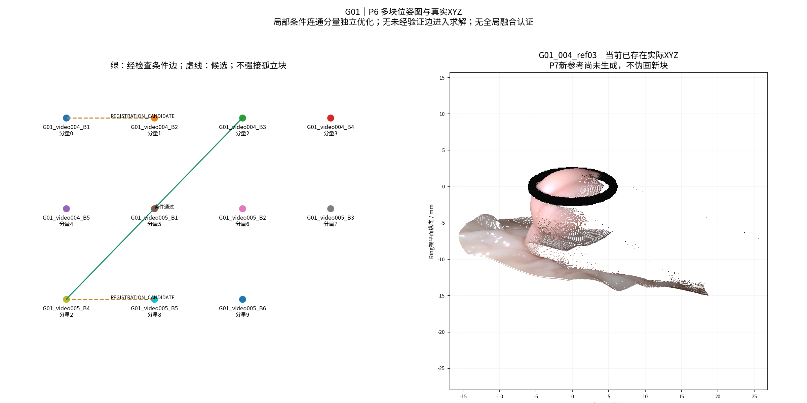
figures/P6_global_pose/G06.png
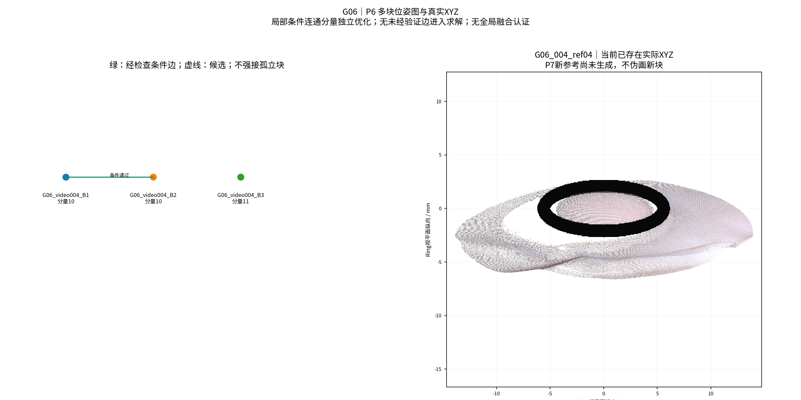
figures/P6_global_pose/G07_G08.png
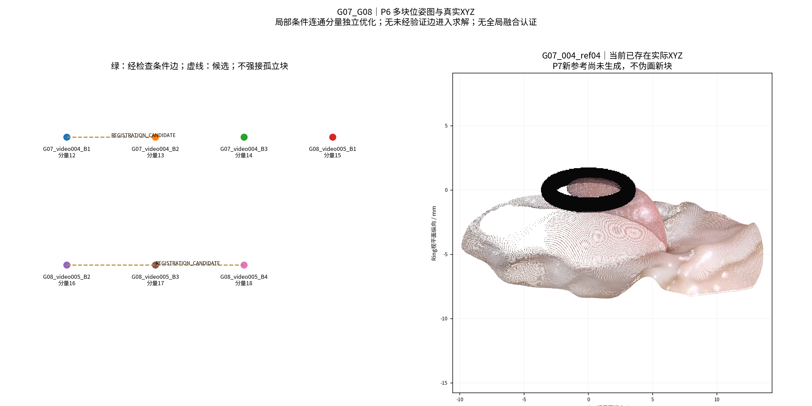
figures/P7_new_reference_reconstruction/G01.png
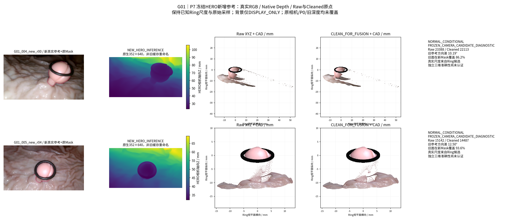
figures/P7_new_reference_reconstruction/G06.png
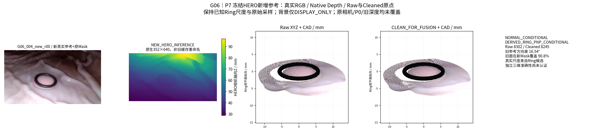
figures/P7_new_reference_reconstruction/G07_G08.png
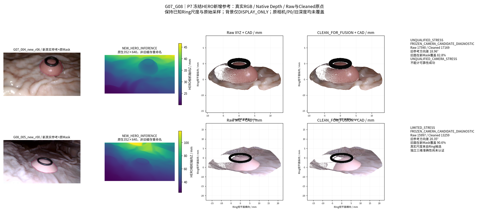
figures/P8_selective_pointcloud/G01.png
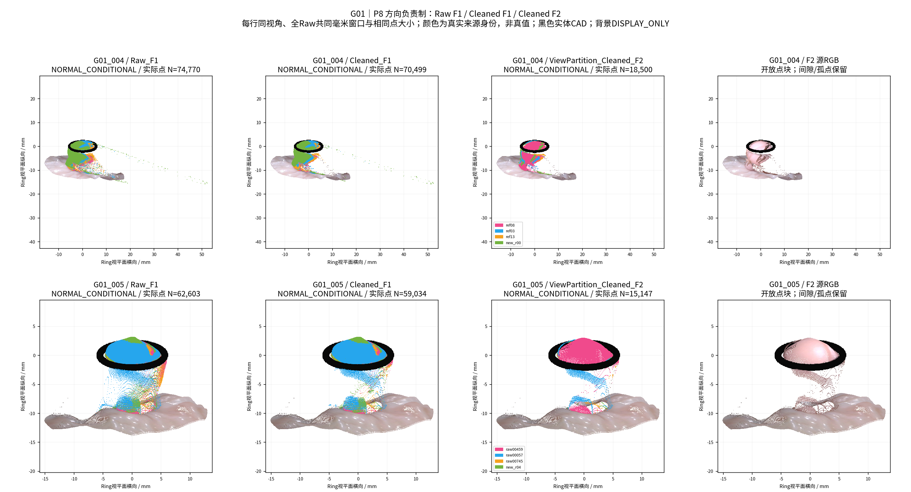
figures/P8_selective_pointcloud/G06.png
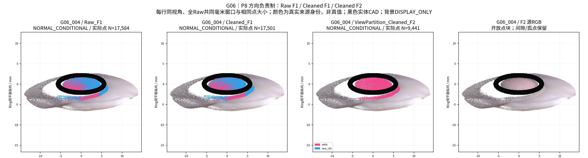
figures/P8_selective_pointcloud/G07_G08.png
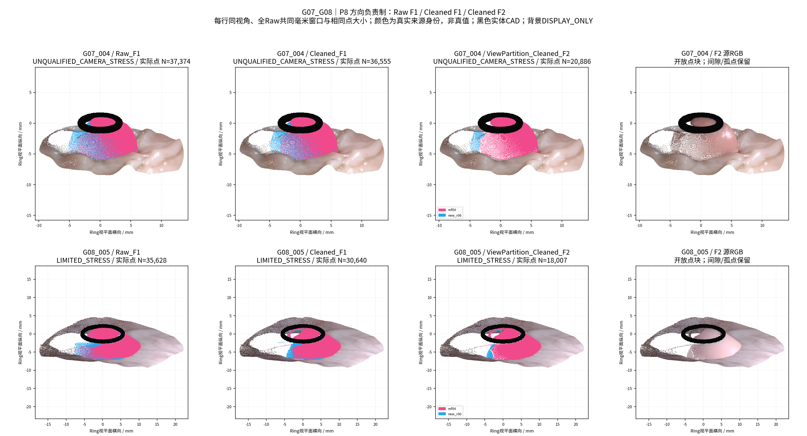
figures/P9_final_comparison/G01.png
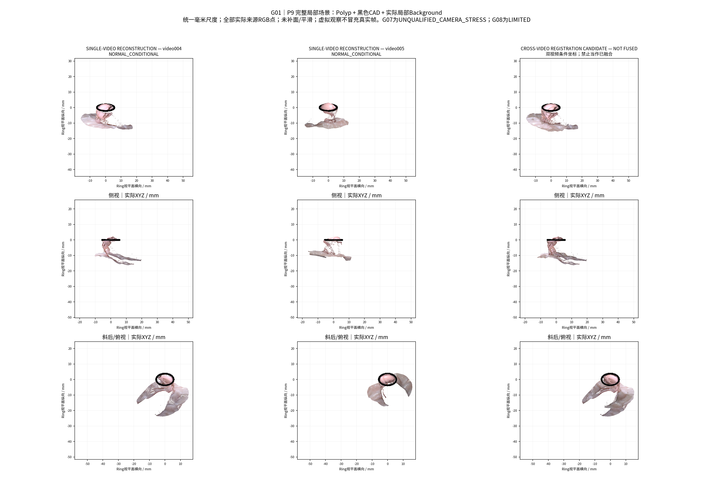
figures/P9_final_comparison/G01_six_views_not_fused.png
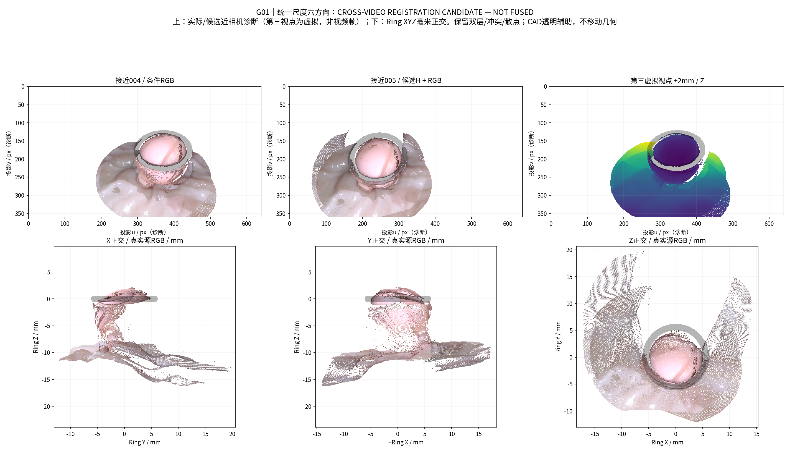
figures/P9_final_comparison/G06.png
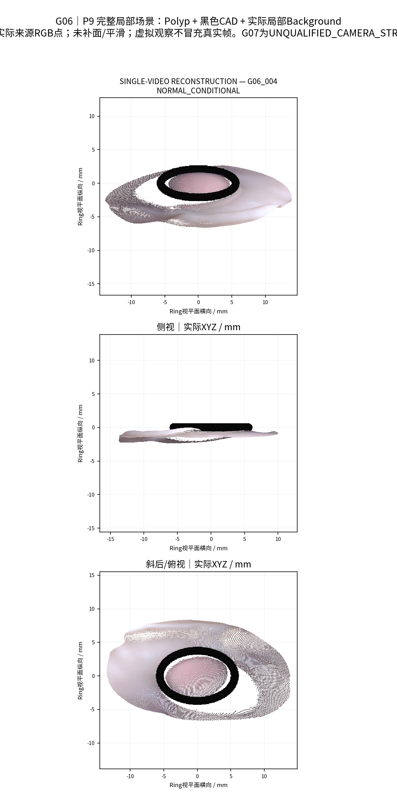
figures/P9_final_comparison/G07_G08.png
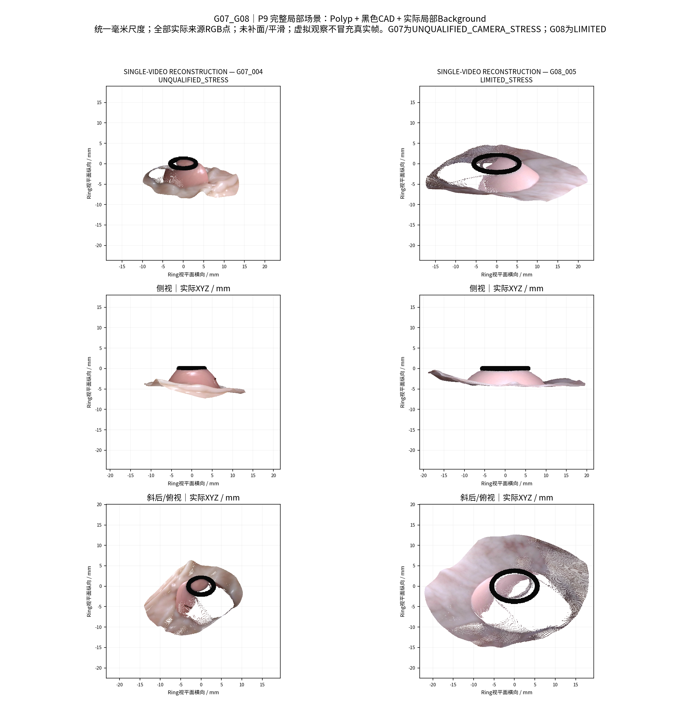
figures/local/A_to_B/G01_004_new_r00_to_G01_video004_004_13.png

figures/local/A_to_B/G01_004_ref08_to_G01_video005_v005_00115.png

figures/local/A_to_B/G01_005_new_r04_to_G01_video005_v005_00860.png

figures/local/A_to_B/G01_005_raw00459_to_G01_photo_003.png

figures/local/A_to_B/G01_005_raw00459_to_G01_video004_004_08.png

figures/local/A_to_B/G06_004_new_r00_to_G06_video004_key07_raw00962.png

figures/local/A_to_B/G07_004_new_r06_to_G07_video004_key04_raw00369.png

figures/local/A_to_B/G08_005_new_r00_to_key03_raw00531.png

figures/local/G01_004/Camera_3Views.png

figures/local/G01_004/Layers_L1-L5.png

figures/local/G01_004/XYZ_3Views.png

figures/local/G01_005/Camera_3Views.png

figures/local/G01_005/Layers_L1-L5.png

figures/local/G01_005/XYZ_3Views.png

figures/local/G06_004/Camera_3Views.png

figures/local/G06_004/Layers_L1-L5.png

figures/local/G06_004/XYZ_3Views.png

figures/local/G07_004/Camera_3Views.png

figures/local/G07_004/Layers_L1-L5.png

figures/local/G07_004/XYZ_3Views.png

figures/local/G08_005/Camera_3Views.png

figures/local/G08_005/Layers_L1-L5.png

figures/local/G08_005/XYZ_3Views.png

指标与最终身份
工程完成；跨视频 NOT FUSED；真实新增表面/物理精度未认证。G07压力测试、G08有限相机。灰色/深度图皆实际XYZ。
本地可旋转GLB（未上传GitHub）
真实点原语，GLB米、精确NPZ毫米；来源ID在metadata中。相应NPZ/PLY同目录。点击下载后可用本地3D查看器旋转。
复现说明 · 全部本地资产路径与SHA。figures/local仅本地；GitHub仅精选P0–P9核心PNG。